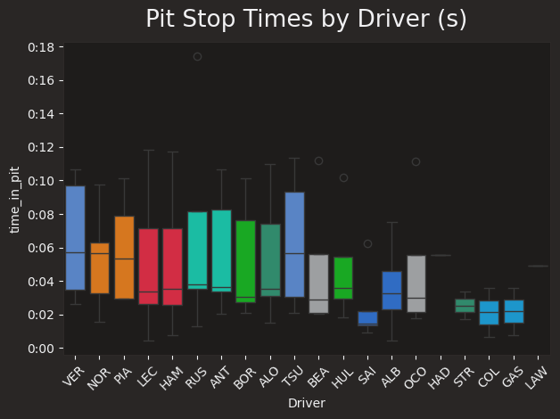

Chasing the Perfect Lap: Analysing the data in python
Qualifying vs Final Race position
Only the first 10 drivers are awarded points, these points contribute towards the Drivers' and Constructors' Championship. The final standing of constructors determines the prize m oney from a prize pool of $1.2b. In recent years, very few positions are gained or lost during the race, instead - the qualifying position is better indicator of the final r ace position. The teams put a much greater emphasis on qualifying as high as possible.
# Add positions gained column
quali_race_comparison['positions_gained'] = quali_race_comparison['quali_position'] - quali_race_comparison['race_position']
# Add DNF flag for drivers that did not finish the race
quali_race_comparison['is_DNF'] = quali_race_comparison['ClassifiedPosition'].isin(['R','W', 'D']).astype(int)
# Filter rows DNF drivers
quali_race_comparison_valid = quali_race_comparison[quali_race_comparison['is_DNF'] == 0]
# Calculate basic stats on 'RaceTime'
mean_val = quali_race_comparison_valid['positions_gained'].mean()
std_dev = quali_race_comparison_valid['positions_gained'].std()
print(f"Mean positions_gained (is_DNF=0): {mean_val}")
print(f"Standard Deviation positions_gained (is_DNF=0): {std_dev}")
# Count frequency of positions gained and plot on a graph
positions_count = quali_race_comparison_valid['positions_gained'].value_counts().sort_index()
positions_count.plot(kind='bar', color='skyblue')
plt.title('Count of Positions Gained')
plt.xlabel('Positions Gained')
plt.ylabel('Number of instances')
plt.show()
The graph shows that across most of the races, drivers will usually gain or lose between four race positions, it is exceedingly rare for a driver to score a significant number of points if they start outside the top 10 at the beginning of the race. Therefore, it has been imperative, that drivers start as qualify as high as possible.
Get the qualifying information
# Qualifying Pole vs Team
## Get session information
# load a session and its telemetry data
race_year = 2025
race_name = 'Italy'
session = fastf1.get_session(race_year, race_name, 'Q')
session.load().head()
Sense check the output
Time in Pit Analysis
Each qualifying session is only 15 minutes, therefore teams to maximise time on track but also ensure the tyres do not degrade to significantly, and also ensure the cars are fueled correctly, so they are not carrying too much weight.
Duration of pitstops by team and drivers
# Select necessary columns
pit_time_df = session.laps[['Driver', 'Team', 'PitOutTime', 'PitInTime']]
#Lag pit in time, to only compare within the same driver
pit_time_df['NextPitInTime'] = pit_time_df.groupby('Driver')['PitInTime'].shift(1)
#calculate time in pit
pit_time_df['time_in_pit'] = pit_time_df['PitOutTime'] - pit_time_df['NextPitInTime']
# Drop the nulls, where the shift(1) has caused a null or the driver retired during qualifyinf
pit_time_df = pit_time_df.dropna(subset=['time_in_pit'])
pit_time_df[['Driver','Team','PitOutTime','NextPitInTime','time_in_pit']].head(10)
This information was then displayed on a boxplot to visualise for all the drivers
Number of pit stops by team and driver
# Group by Driver
driver_summary = (
pit_time_df.groupby('Driver')
.agg(
NumStops=('time_in_pit', 'count'),
AvgPitTime=('time_in_pit', 'mean')
)
.reset_index()
)
# Group by Team
team_summary = (
pit_time_df.groupby('Team')
.agg(
NumStops=('time_in_pit', 'count'),
AvgPitTime=('time_in_pit', 'mean')
)
.reset_index()
)
team_colors = {
'McLaren':'#F47600',
'Aston Martin':'#229971',
'Williams':'#1868DB',
'Haas F1 Team':'#9C9FA2',
'Ferrari':'#ED1131',
'Red Bull Racing':'#4781D7',
'Mercedes':'#00D7B6',
'Kick Sauber':'#01C00E',
'Racing Bulls':'#6C98FF',
'Alpine':'#00A1E8'
}
def get_team_color(team_name):
return team_colors[team_name]
# Prepare data
teams = team_summary['Team']
num_stops = team_summary['NumStops']
avg_pit_time = team_summary['AvgPitTime']
colors = [get_team_color(team) for team in teams]
# -----------------------------
# 1. Bar Chart - NumStops
# -----------------------------
plt.figure(figsize=(10, 4))
plt.bar(teams, num_stops, color=colors)
plt.xticks(rotation=45, ha='right')
plt.ylabel('Number of Pit Stops')
plt.title('Total Pit Stops per Team')
plt.tight_layout()
plt.show()
# -----------------------------
# 2. Bar Chart - AvgPitTime
# -----------------------------
plt.figure(figsize=(10, 4))
plt.bar(teams, avg_pit_time, color=colors)
plt.xticks(rotation=45, ha='right')
plt.ylabel('Average Pit Time (min)')
plt.title('Average Pit Stop Duration per Team')
plt.tight_layout()
plt.show()
drivers = driver_summary['Driver']
num_stops = driver_summary['NumStops']
avg_pit_time = driver_summary['AvgPitTime']
# Get colors from driver_colour_dict
colors = [driver_colour_dict.get(driver, {'color': '#808080'})['color'] for driver in drivers]
# Bar chart - NumStops per driver
plt.figure(figsize=(12, 5))
plt.bar(drivers, num_stops, color=colors)
plt.xticks(rotation=45, ha='right')
plt.ylabel('Number of Pit Stops')
plt.title('Total Pit Stops per Driver')
plt.tight_layout()
plt.show()
# Bar chart - AvgPitTime per driver
plt.figure(figsize=(12, 5))
plt.bar(drivers, avg_pit_time, color=colors)
plt.xticks(rotation=45, ha='right')
plt.ylabel('Average Pit Time (min)')
plt.title('Average Pit Stop Duration per Driver')
plt.tight_layout()
plt.show()
The teams are very consistent across the board with the number of pit stop and average length of time for a pit stop. The pole sitter, Verstappen (VER) had similar pit stop and length of pit stops with his teammate Tsunoda (TSU). This can therefore be ruled out as a significant factor.
Tyre Health
The softer the tyre, the more grip it has, however, there is a trade-off. The softer the tyre, the faster it degrades. Teams will opt to use the softest tyre compound available to them during qualifying, and limit the number of laps the drivers do. The best qualifying laps normally take place on a three lap cycle, the first lap is an out lap, the second a warm up, to have one attempt, and the final lap is usually the best qualifying lap.
There is one anomaly, Sainz's final qualifying lap was on used tyres that had already done six laps. In theory, Sainz's qualifying lap could have been marginally improved. Another thing to consider, which has not been analysed if soft tyres were used within the race to aim to push during the race itself.
Best Lap Comparison
Each circuit is split into sectors, these sector times can be combined to create the quickest "theoretical lap" to show the ultimate pace if the driver had pieced together their best sectors. It also reveals positions gained or lost, showing which drivers maximised their potential and which left speed on the table despite flashes of sector pace.
#Isolate specific columns
best_laps = session.laps[['Driver','Sector1Time','Sector2Time','Sector3Time', 'LapTime']]
# Select the quickest time for sector and lap for each driver
best_laps_summary = best_laps.groupby('Driver').agg({
'Sector1Time': 'min',
'Sector2Time': 'min',
'Sector3Time': 'min',
'LapTime': 'min'
}).reset_index()
# Create theoretical best lap time
best_laps_summary['best_laptime'] = best_laps_summary['Sector1Time'] + best_laps_summary['Sector2Time'] + best_laps_summary['Sector3Time']
# Calculate percentage diff in time between fastest and final lap time
best_laps_summary['percent_diff'] = ((best_laps_summary['LapTime'] - best_laps_summary['best_laptime'])/ best_laps_summary['LapTime']) *100
# Calculate best qualifying position
best_laps_summary['best_quali_position'] = best_laps_summary['best_laptime'].rank(method='min', ascending=True)
best_laps_summary['quali_position'] = best_laps_summary['LapTime'].rank(method='min', ascending=True)
# Sense Check the results
best_laps_summary.sort_values('percent_diff', ascending=True)
#Add positions gained column
best_laps_summary['max_position_gain'] = best_laps_summary['best_quali_position'] - best_laps_summary['quali_position']
best_laps_summary.sort_values(
by=['max_position_gain', 'best_laptime'],
ascending = [True, True]
)
Analysis:
Difference with a driver less than 1% difference - theortical time is very similar to race - indication of race itself, monza is very high speed and shows drivers are consistent and therefore there are other factors to consider.
Compare telemetry of a selected team with pole position
Since the drivers’ final qualifying laps show minimal differences from their individual best sector times, a more detailed review of the telemetry is required to identify the underlying performance variations.
def compare_team_with_pole(team_name, session):
"""
Compare the fastest lap data of all drivers in a given team with the overall pole sitter.
This function retrieves the fastest lap for each driver in the specified team,
extracts their car telemetry data with distance information added, and then
also retrieves the fastest lap of the session (pole position).
It returns a dictionary mapping driver names to their lap telemetry data.
Args:
team_name (str): The name of the team to analyse (e.g., "Mercedes").
Returns:
dict:
A dictionary where keys are driver names (including the pole sitter)
and values are pandas.DataFrame objects containing telemetry data with
distance added for each driver's fastest lap.
Notes:
- Each DataFrame returned contains telemetry channels such as speed, throttle,
brake, etc., indexed by distance.
"""
# Get drivers for selected team
driver_list = session.laps.pick_teams(team_name)['Driver'].unique()
# For each driver, get fastest
lap_times = {}
for driver in driver_list:
lap_times[driver] = session.laps.pick_drivers(driver).pick_fastest().get_car_data().add_distance()
# Get fastest driver overall (pole)
fastest_driver = session.laps.pick_fastest()['Driver']
lap_times[fastest_driver] = session.laps.pick_fastest().get_car_data().add_distance()
return lap_times
output = compare_team_with_pole(team_name = 'Ferrari', session = session)
x_columns_to_plot = ['RPM', 'Speed', 'nGear','Throttle','DRS']
y_columns_to_plot = ['Distance']
def plot_comparison(lap_times, x_columns, y_column="Distance", driver_styles=driver_colour_dict):
"""
Plot comparison graphs for each x_column against y_column
across all drivers in lap_times.
Args:
lap_times (dict): Dictionary mapping driver names (str) to telemetry DataFrames (pd.DataFrame)
containing lap data with distance and other telemetry columns.
x_columns (list): List of column names (str) from telemetry to plot on the y-axis.
y_column (str, optional): Column name (str) from telemetry to plot on the x-axis. Defaults to "Distance".
driver_styles (dict, optional): Dictionary mapping driver names (str) to a style dict:
{"color": str, "linestyle": str}. If not provided, uses default
style from `driver_colour_dict`.
Returns:
None: Displays a matplotlib plot for each x_column.
Notes:
- Each plot will compare all drivers in lap_times for the given telemetry column.
"""
for x_col in x_columns:
plt.figure(figsize=(20,12))
for driver, telemetry in lap_times.items():
# Default style if driver not in dict
style = driver_styles[driver]
plt.plot(
telemetry[y_column],
telemetry[x_col],
label=driver,
color=style["color"],
linestyle=style["linestyle"]
)
plt.title(f"{x_col} vs {y_column}")
plt.xlabel(y_column)
plt.ylabel(x_col)
plt.legend()
plt.grid(True, alpha=0.3)
plt.show()
lap_times = compare_team_with_pole(team_name = "McLaren", session=session)
x_columns_to_plot = ['RPM', 'Speed', 'nGear','Throttle']
plot_comparison(lap_times, x_columns_to_plot, y_column="Distance")
Summary of traces
Speed and throttle traces are the most useful tools for comparison. Gear and RPM are more dependent on engine characteristics and driver preference.
The speed trace shows:
- how late each driver brakes into a corner,
- how much they brake,
- how quickly they accelerate out of the corner,
- and their top speed.
At this level, the speed traces are extremely similar — often differing by only a few hundredths — so they don’t reveal differences in racing lines.
Throttle traces give a strong indication of corner exit performance.
RPM traces contain more noise but are useful for identifying gear changes. Since both McLarens use the same engine, their RPM patterns naturally look similar, especially in post-shift behaviour.